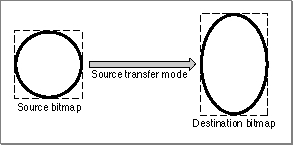

Legacy Document
Important: The information in this document is obsolete and should not be used for new development.
Important: The information in this document is obsolete and should not be used for new development.


CopyBits
You can use theCopyBitsprocedure to copy a portion of a bitmap or a pixel map from one graphics port (or offscreen graphics world) into another graphics port.
PROCEDURE CopyBits (srcBits,dstBits: BitMap; srcRect,dstRect:\xF0Rect; mode:\xF0Integer; maskRgn:\xF0RgnHandle);
srcBits- The source
BitMaprecord.dstBits- The destination
BitMaprecord.srcRect- The source rectangle.
dstRect- The destination rectangle.
mode- One of the eight source modes in which the copy is to be performed.
maskRgn- A region to use as a clipping mask.
DESCRIPTION
TheCopyBitsprocedure transfers any portion of a bitmap between two basic graphics ports, or any portion of a pixel map between two color graphics ports. You can useCopyBitsto move offscreen graphic images into an onscreen window, to blend colors for the image in a pixel map, and to shrink and expand images.Specify a source bitmap in the
srcBitsparameter and a destination bitmap in thedstBitsparameter. When copying images between color graphics ports, you must coerce eachCGrafPortrecord to aGrafPortrecord, dereference theportBitsfields of each, and then pass these "bitmaps" in thesrcBitsanddstBitsparameters. If your application copies a pixel image from a color graphics port calledMyColorPort, for example, you could specifyGrafPtr(MyColorPort)^.portBitsin thesrcBitsparameter. In aCGrafPortrecord, the high 2 bits of theportVersionfield are set. This field, which shares the same position in aCGrafPortrecord as theportBits.rowBytesfield in aGrafPortrecord, indicates toCopyBitsthat you have passed it a handle to a pixel map rather than a bitmap.Using the
srcRectanddstRectparameters, you can specify identically or differently sized source and destination rectangles; for differently sized rectangles,CopyBitsscales the source image to fit the destination. As shown in Figure 3-27, for example, if the bit image is a circle in a square source rectangle, and the destination rectangle is not square, the bit image appears as an oval in the destination. When you specify rectangles in thesrcRectanddstRectparameters, use the local coordinate systems of, respectively, the source and destination graphics ports.Figure 3-27 Using
CopyBitsto stretch an image
In themodeparameter, specify one of the following source modes for transferring the bits from a source bitmap to a destination bitmap:
CONST {source modes for basic graphics ports} srcCopy = 0; {where source pixel is black, force } { destination pixel black; where source pixel } { is white, force destination pixel white} srcOr = 1; {where source pixel is black, force } { destination pixel black; where source pixel } { is white, leave destination pixel unaltered} srcXor = 2; {where source pixel is black, invert } { destination pixel; where source pixel is } { white, leave destination pixel unaltered} srcBic = 3; {where source pixel is black, force } { destination pixel white; where source pixel } { is white, leave destination pixel unaltered} notSrcCopy = 4; {where source pixel is black, force } { destination pixel white; where source pixel } { is white, force destination pixel black} notSrcOr = 5; {where source pixel is black, leave } { destination pixel unaltered; where source } { pixel is white, force destination pixel black} notSrcXor = 6; {where source pixel is black, leave } { destination pixel unaltered; where source } { pixel is white, invert destination pixel} notSrcBic = 7; {where source pixel is black, leave } { destination pixel unaltered; where source } { pixel is white, force destination pixel white}On computers running System 7, you can add dithering to any source mode by adding the following constant or the value it represents to the source mode:
CONST ditherCopy = 64; {add to source mode for dithering}Dithering is a technique that mixes existing colors to create the effect of additional colors. It also improves images that you shrink or that you copy from a direct pixel device to an indexed device. TheCopyBitsprocedure always dithers images when shrinking them between pixel maps on direct devices.To use highlighting, you can add this constant or its value to the source mode:
CONST hilite= 50; {add to source or pattern mode for highlighting}With highlighting, QuickDraw replaces the background color with the highlight color when your application copies images between graphics ports. This has the visual effect of using a highlighting pen to select the object. (The global variableHiliteRGBis read from parameter RAM when the machine starts. Basic graphics ports use the color stored in theHiliteRGBglobal variable as the highlight color. Color graphics ports default to theHiliteRGBglobal variable, but can be overridden by theHiliteColorprocedure, described in the chapter "Color QuickDraw.")When transferring pixels from a source pixel map to a destination pixel map, Color QuickDraw interprets the source mode constants differently than basic QuickDraw does. These constants have the following effects under Color QuickDraw:
CONST {source modes for color graphics ports} srcCopy = 0;{determine how close the color of the source } { pixel is to black, and assign this relative } { amount of foreground color to the } { destination pixel; determine how close the } { color of the source pixel is to white, and } { assign this relative amount of background } { color to the destination pixel} srcOr = 1;{determine how close the color of the source } { pixel is to black, and assign this relative } { amount of foreground color to the } { destination pixel} srcXor = 2;{where source pixel is black, invert the } { destination pixel--for a colored destination } { pixel, use the complement of its color } { if the pixel is direct, invert its index if } { the pixel is indexed} srcBic = 3;{determine how close the color of the source } { pixel is to black, and assign this relative } { amount of background color to the } { destination pixel} notSrcCopy = 4;{determine how close the color of the source } { pixel is to black, and assign this relative } { amount of background color to the } { destination pixel; determine how close the } { color of the source pixel is to white, and } { assign this relative amount of foreground } { color to the destination pixel} notSrcOr = 5; {determine how close the color of the source } { pixel is to white, and assign this relative } { amount of foreground color to the } { destination pixel} notSrcXor = 6; {where source pixel is white, invert the } { destination pixel--for a colored destination } { pixel, use the complement of its color } { if the pixel is direct, invert its index if } { the pixel is indexed} notSrcBic = 7; {determine how close the color of the source } { pixel is to white, and assign this relative } { amount of background color to the } { destination pixel}When you useCopyBitson a computer running Color QuickDraw, you can also specify one of the following transfer modes in themodeparameter:
CONST {arithmetic transfer modes available in Color QuickDraw} blend = 32; {replace destination pixel with a blend } { of the source and destination pixel } { colors; if the destination is a bitmap or } { 1-bit pixel map, revert to srcCopy mode} addPin = 33; {replace destination pixel with the sum of } { the source and destination pixel colors-- } { up to a maximum allowable value; if } { the destination is a bitmap or } { 1-bit pixel map, revert to srcBic mode} addOver = 34; {replace destination pixel with the sum of } { the source and destination pixel colors-- } { but if the value of the red, green, or } { blue component exceeds 65,536, then } { subtract 65,536 from that value; if the } { destination is a bitmap or 1-bit } { pixel map, revert to srcXor mode} subPin = 35; {replace destination pixel with the } { difference of the source and destination } { pixel colors--but not less than a minimum } { allowable value; if the destination } { is a bitmap or 1-bit pixel map, revert to } { srcOr mode} transparent = 36; {replace the destination pixel with the } { source pixel if the source pixel isn't } { equal to the background color} addMax = 37; {compare the source and destination pixels, } { and replace the destination pixel with } { the color containing the greater } { saturation of each of the RGB components; } { if the destination is a bitmap or } { 1-bit pixel map, revert to srcBic mode} subOver = 38; {replace destination pixel with the } { difference of the source and destination } { pixel colors--but if the value of the } { red, green, or blue component is } { less than 0, add the negative result to } { 65,536; if the destination is a bitmap or } { 1-bit pixel map, revert to srcXor mode} adMin = 39; {compare the source and destination pixels, } { and replace the destination pixel with } { the color containing the lesser } { saturation of each of the RGB components; } { if the destination is a bitmap or } { 1-bit pixel map, revert to srcOr mode}You can pass a region handle in theMaskRgnparameter to specify a mask region; the resulting image is always clipped to this mask region and to the boundary rectangle of the destination bitmap. If the destination bitmap is the current graphics port's bitmap, it's also clipped to the intersection of the graphics port's clipping region and visible region. If you don't want to clip to a masking region, just passNILfor themaskRgnparameter.SPECIAL CONSIDERATIONS
When you use theCopyBitsprocedure to transfer an image between pixel maps, the source and destination images may be of different pixel depths, of different sizes, and they may have different color tables. However,CopyBitsassumes that the destination pixel map uses the same color table as the color table for the currentGDevicerecord. (This is because the Color Manager requires an inverse table for translating the color table from the source pixel map to the destination pixel map.)The
CopyBitsprocedure applies the foreground and background colors of the current graphics port to the image in the destination pixel map (or bitmap), even if the source image is a bitmap. This causes the foreground color to replace all black pixels in the destination and the background color to replace all white pixels. To avoid unwanted coloring of the image, use theRGBForeColorprocedure to set the foreground to black and use theRGBBackColorprocedure to set the background to white before callingCopyBits.The source bitmap or pixel map must not occupy more memory than half the available stack space. The stack space required by
CopyBitsis roughly five times the value of therowBytesfield of the source pixel map: onerowBytesvalue for the pixel map (or bitmap), an additionalrowBytesvalue for dithering, anotherrowBytesvalue when stretching or shrinking the source pixel map into the destination, anotherrowBytesvalue for any color map changing, and a fifth additionalrowBytesvalue for any color aliasing. If there is insufficient memory to complete aCopyBitsoperation in Color QuickDraw, theQDErrorfunction (described in the chapter "Color QuickDraw" in this book) returns the result code -143.If you use
CopyBitsto copy between two graphics ports that overlap, you must first use theLocalToGlobalprocedure to convert to global coordinates, and then specify the global variablescreenBitsfor both thesrcBitsanddstBitsparameters.The
CopyBitsprocedure may move or purge memory blocks in the application heap. Your application should not call this procedure at interrupt time.If you are reading directly from a NuBus
\x89 video card with a base address of Fs00000 and there is not a card in the slot (s-1) below it, CopyBitsreads addresses less than the base address of the pixel map. This causes a bus error. To work around the problem, remap thebaseAddrfield of the pixel map in your video card to at least 20 bytes above the NuBus boundary; an address link of Fs000020 precludes the problem.SEE ALSO
Listing 3-11 on page 3-29 illustrates how to useCopyBitsto scale an image when copying it from one window into another. Source modes are described in "Boolean Transfer Modes With 1-Bit Pixels" beginning on page 3-7. Plate 2 at the front of this book illustrates how to useCopyBitsto colorize an image in a color graphics port; Listing 4-5 on page 4-26 in the chapter "Color QuickDraw" shows the sample code that produced this plate. Listing 6-1 on page 6-5 in the chapter "Offscreen Graphics Worlds" illustrates how to useCopyBitsto copy an image from an offscreen graphics world to an onscreen color graphics port.Dithering, pixel maps, color graphics ports, the
RGBForeColorandRGBBackColorprocedures, and color tables are explained in the chapter "Color QuickDraw." TheLocalToGlobalprocedure is described in the chapter "Basic QuickDraw." TheGDevicerecord is described in the chapter "Graphics Devices." Inverse tables and the Color Manager are described in the chapter "Color Manager" in Advanced Color Imaging on the Mac OS."Copying Pixels Between Color Graphics Ports" in the chapter "Color QuickDraw" describes in greater detail how to use
CopyBitsto transfer colored images.The
CopyDeepMaskprocedure (described on page 3-116) combines the functions of theCopyBitsandCopyMaskprocedures. (TheCopyMaskprocedure is described next.)